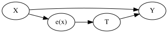
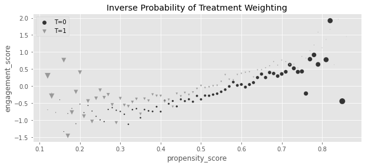
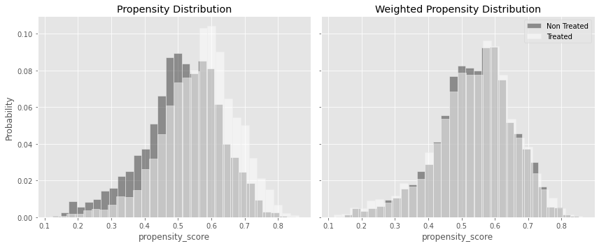
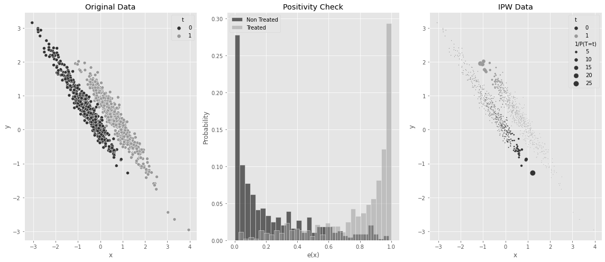
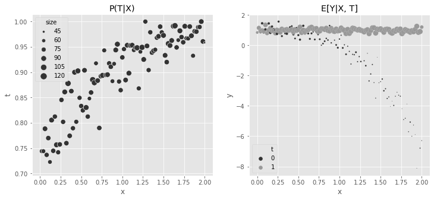
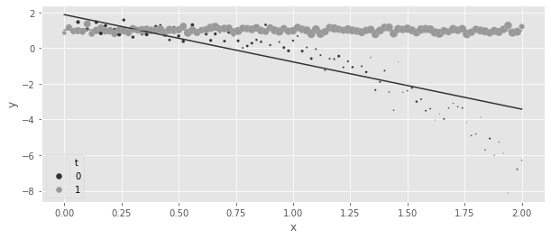
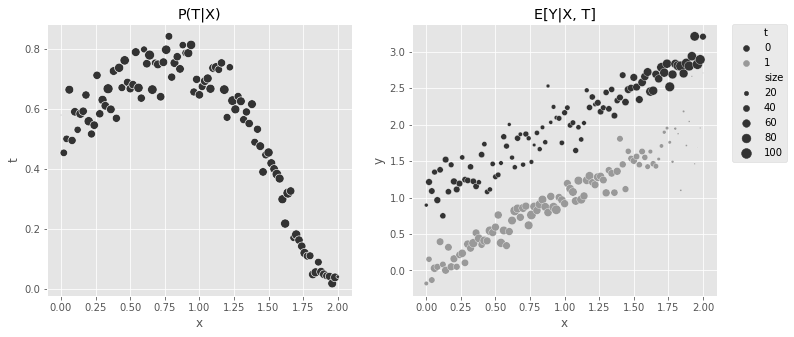
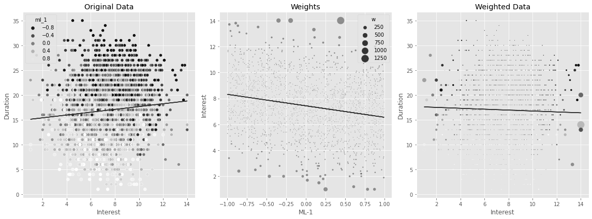
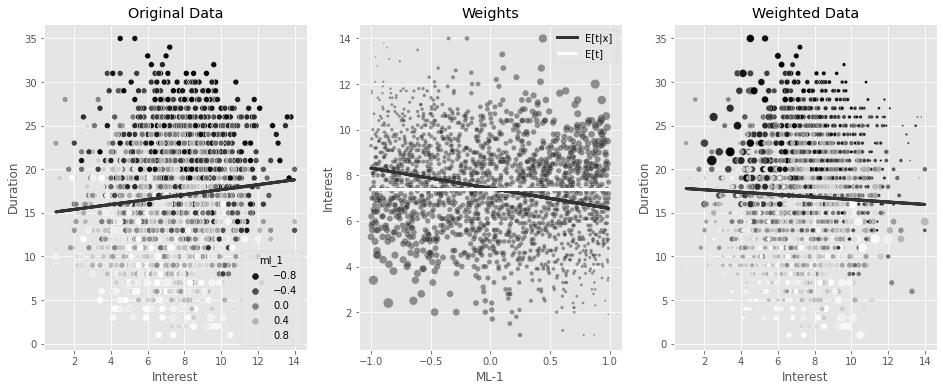
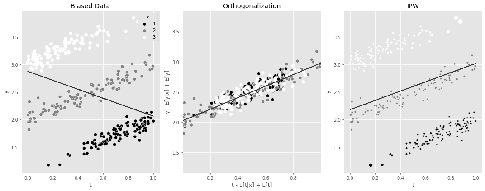

import warnings
warnings.filterwarnings("ignore")
import pandas as pd
import numpy as np
import graphviz as gr
from matplotlib import style
import seaborn as sns
from matplotlib import pyplot as plt
style.use("ggplot")
import statsmodels.formula.api as smf
from cycler import cycler
color = ["0.2", "0.6", "1.0"]
default_cycler = cycler(color=color)
linestyle = ["-", "--", ":", "-."]
marker = ["o", "v", "d", "p"]
plt.rc("axes", prop_cycle=default_cycler)5징 - 성향점수
5.1 관리자 교육의 효과
df = pd.read_csv("data/management_training.csv")
df.head()| departament_id | intervention | engagement_score | tenure | n_of_reports | gender | role | last_engagement_score | department_score | department_size | |
|---|---|---|---|---|---|---|---|---|---|---|
| 0 | 76 | 1 | 0.277359 | 6 | 4 | 2 | 4 | 0.614261 | 0.224077 | 843 |
| 1 | 76 | 1 | -0.449646 | 4 | 8 | 2 | 4 | 0.069636 | 0.224077 | 843 |
| 2 | 76 | 1 | 0.769703 | 6 | 4 | 2 | 4 | 0.866918 | 0.224077 | 843 |
| 3 | 76 | 1 | -0.121763 | 6 | 4 | 2 | 4 | 0.029071 | 0.224077 | 843 |
| 4 | 76 | 1 | 1.526147 | 6 | 4 | 1 | 4 | 0.589857 | 0.224077 | 843 |
5.2 회귀분석과 보정
smf.ols("engagement_score ~ intervention", data=df).fit().summary().tables[1]| coef | std err | t | P>|t| | [0.025 | 0.975] | |
|---|---|---|---|---|---|---|
| Intercept | -0.2347 | 0.014 | -16.619 | 0.000 | -0.262 | -0.207 |
| intervention | 0.4346 | 0.019 | 22.616 | 0.000 | 0.397 | 0.472 |
model = smf.ols(
"""engagement_score ~ intervention
+ tenure + last_engagement_score + department_score
+ n_of_reports + C(gender) + C(role)""",
data=df,
).fit()
print("ATE:", model.params["intervention"])
print("95% CI:", model.conf_int().loc["intervention", :].values.T)ATE: 0.2677908576676856
95% CI: [0.23357751 0.30200421]5.3 성향점수
g = gr.Digraph(graph_attr={"rankdir": "LR"})
g.edge("T", "Y")
g.edge("X", "Y")
g.edge("X", "e(x)")
g.edge("e(x)", "T")
g
5.3.1 성향점수 추정
ps_model = smf.logit(
"""intervention ~
tenure + last_engagement_score + department_score
+ C(n_of_reports) + C(gender) + C(role)""",
data=df,
).fit(disp=0)data_ps = df.assign(
propensity_score=ps_model.predict(df),
)
data_ps[["intervention", "engagement_score", "propensity_score"]].head()| intervention | engagement_score | propensity_score | |
|---|---|---|---|
| 0 | 1 | 0.277359 | 0.596106 |
| 1 | 1 | -0.449646 | 0.391138 |
| 2 | 1 | 0.769703 | 0.602578 |
| 3 | 1 | -0.121763 | 0.580990 |
| 4 | 1 | 1.526147 | 0.619976 |
5.3.2 성향점수와 직교화
model = smf.ols(
"engagement_score ~ intervention + propensity_score", data=data_ps
).fit()
model.params["intervention"]0.263312674902770665.3.3 성향점수 매칭
from sklearn.neighbors import KNeighborsRegressor
T = "intervention"
X = "propensity_score"
Y = "engagement_score"
treated = data_ps.query(f"{T}==1")
untreated = data_ps.query(f"{T}==0")
mt0 = KNeighborsRegressor(n_neighbors=1).fit(untreated[[X]], untreated[Y])
mt1 = KNeighborsRegressor(n_neighbors=1).fit(treated[[X]], treated[Y])
predicted = pd.concat(
[
# find matches for the treated looking at the untreated knn model
treated.assign(match=mt0.predict(treated[[X]])),
# find matches for the untreated looking at the treated knn model
untreated.assign(match=mt1.predict(untreated[[X]])),
]
)
predicted.head()| departament_id | intervention | engagement_score | tenure | n_of_reports | gender | role | last_engagement_score | department_score | department_size | propensity_score | match | |
|---|---|---|---|---|---|---|---|---|---|---|---|---|
| 0 | 76 | 1 | 0.277359 | 6 | 4 | 2 | 4 | 0.614261 | 0.224077 | 843 | 0.596106 | 0.557680 |
| 1 | 76 | 1 | -0.449646 | 4 | 8 | 2 | 4 | 0.069636 | 0.224077 | 843 | 0.391138 | -0.952622 |
| 2 | 76 | 1 | 0.769703 | 6 | 4 | 2 | 4 | 0.866918 | 0.224077 | 843 | 0.602578 | -0.618381 |
| 3 | 76 | 1 | -0.121763 | 6 | 4 | 2 | 4 | 0.029071 | 0.224077 | 843 | 0.580990 | -1.404962 |
| 4 | 76 | 1 | 1.526147 | 6 | 4 | 1 | 4 | 0.589857 | 0.224077 | 843 | 0.619976 | 0.000354 |
np.mean(
(predicted[Y] - predicted["match"]) * predicted[T]
+ (predicted["match"] - predicted[Y]) * (1 - predicted[T])
)0.287774434740459665.3.4 역확률 가중치
g_data = (
data_ps.assign(
weight=data_ps["intervention"] / data_ps["propensity_score"]
+ (1 - data_ps["intervention"]) / (1 - data_ps["propensity_score"]),
propensity_score=data_ps["propensity_score"].round(2),
)
.groupby(["propensity_score", "intervention"])[["weight", "engagement_score"]]
.mean()
.reset_index()
)
plt.figure(figsize=(10, 4))
for t in [0, 1]:
sns.scatterplot(
data=g_data.query(f"intervention=={t}"),
y="engagement_score",
x="propensity_score",
size="weight",
sizes=(1, 100),
color=color[t],
legend=None,
label=f"T={t}",
marker=marker[t],
)
plt.title("Inverse Probability of Treatment Weighting")
plt.legend()
weight_t = 1 / data_ps.query("intervention==1")["propensity_score"]
weight_nt = 1 / (1 - data_ps.query("intervention==0")["propensity_score"])
t1 = data_ps.query("intervention==1")["engagement_score"]
t0 = data_ps.query("intervention==0")["engagement_score"]
y1 = sum(t1 * weight_t) / len(data_ps)
y0 = sum(t0 * weight_nt) / len(data_ps)
print("E[Y1]:", y1)
print("E[Y0]:", y0)
print("ATE", y1 - y0)E[Y1]: 0.11656317232946772
E[Y0]: -0.1494155364781444
ATE 0.2659787088076121np.mean(
data_ps["engagement_score"]
* (data_ps["intervention"] - data_ps["propensity_score"])
/ (data_ps["propensity_score"] * (1 - data_ps["propensity_score"]))
)0.265978708807612265.3.5 역확률 가중치의 분산
from sklearn.linear_model import LogisticRegression
from patsy import dmatrix
# define function that computes the IPW estimator
def est_ate_with_ps(df, ps_formula, T, Y):
X = dmatrix(ps_formula, df)
ps_model = LogisticRegression(penalty="none", max_iter=1000).fit(X, df[T])
ps = ps_model.predict_proba(X)[:, 1]
# compute the ATE
return np.mean((df[T] - ps) / (ps * (1 - ps)) * df[Y])formula = """tenure + last_engagement_score + department_score
+ C(n_of_reports) + C(gender) + C(role)"""
T = "intervention"
Y = "engagement_score"
est_ate_with_ps(df, formula, T, Y)0.2659755621752663from joblib import Parallel, delayed # for parallel processing
def bootstrap(data, est_fn, rounds=200, seed=123, pcts=[2.5, 97.5]):
np.random.seed(seed)
stats = Parallel(n_jobs=4)(
delayed(est_fn)(data.sample(frac=1, replace=True)) for _ in range(rounds)
)
return np.percentile(stats, pcts)from toolz import partial
print(f"ATE: {est_ate_with_ps(df, formula, T, Y)}")
est_fn = partial(est_ate_with_ps, ps_formula=formula, T=T, Y=Y)
print("95% C.I.: ", bootstrap(df, est_fn))ATE: 0.2659755621752663
95% C.I.: [0.22654315 0.30072595]5.3.6 안정된 성향점수 가중치
print("Original Sample Size", data_ps.shape[0])
print("Treated Pseudo-Population Sample Size", sum(weight_t))
print("Untreated Pseudo-Population Sample Size", sum(weight_nt))Original Sample Size 10391
Treated Pseudo-Population Sample Size 10435.089079197916
Untreated Pseudo-Population Sample Size 10354.298899788304p_of_t = data_ps["intervention"].mean()
t1 = data_ps.query("intervention==1")
t0 = data_ps.query("intervention==0")
weight_t_stable = p_of_t / t1["propensity_score"]
weight_nt_stable = (1 - p_of_t) / (1 - t0["propensity_score"])
print("Treat size:", len(t1))
print("W treat", sum(weight_t_stable))
print("Control size:", len(t0))
print("W treat", sum(weight_nt_stable))Treat size: 5611
W treat 5634.807508745978
Control size: 4780
W treat 4763.116999421415nt = len(t1)
nc = len(t0)
y1 = sum(t1["engagement_score"] * weight_t_stable) / nt
y0 = sum(t0["engagement_score"] * weight_nt_stable) / nc
print("ATE: ", y1 - y0)ATE: 0.265978708807611765.3.7 유사 모집단
fig, (ax1, ax2) = plt.subplots(1, 2, figsize=(12, 5), sharex=True, sharey=True)
sns.histplot(
data_ps.query("intervention==0")["propensity_score"],
stat="probability",
label="Not Treated",
color="C0",
bins=30,
ax=ax1,
alpha=0.5,
)
sns.histplot(
data_ps.query("intervention==1")["propensity_score"],
stat="probability",
label="Treated",
color="C2",
alpha=0.5,
bins=30,
ax=ax1,
)
ax1.set_title("Propensity Distribution")
sns.histplot(
data_ps.query("intervention==0").assign(w=weight_nt_stable),
x="propensity_score",
stat="probability",
color="C0",
weights="w",
label="Non Treated",
bins=30,
ax=ax2,
alpha=0.5,
)
sns.histplot(
data_ps.query("intervention==1").assign(w=weight_t_stable),
x="propensity_score",
stat="probability",
color="C2",
weights="w",
label="Treated",
bins=30,
alpha=0.5,
ax=ax2,
)
ax2.set_title("Weighted Propensity Distribution")
plt.legend()
plt.tight_layout()
5.3.8 선택편향
5.3.9 편향-분산 트레이드오프
5.3.10 성향점수의 양수성 가정
np.random.seed(42)
n = 1000
x = np.random.normal(0, 1, n)
t = np.random.normal(x, 0.5, n) > 0
y0 = -x
y1 = y0 + t # ate of 1
y = np.random.normal((1 - t) * y0 + t * y1, 0.2)
df_no_pos = pd.DataFrame(dict(x=x, t=t.astype(int), y=y))
df_no_pos.head()| x | t | y | |
|---|---|---|---|
| 0 | 1.624345 | 1 | -0.526442 |
| 1 | -0.611756 | 0 | 0.659516 |
| 2 | -0.528172 | 0 | 0.438549 |
| 3 | -1.072969 | 0 | 0.950810 |
| 4 | 0.865408 | 1 | -0.271397 |
ps_model_sim = smf.logit("""t ~ x""", data=df_no_pos).fit(disp=0)
df_no_pos_ps = df_no_pos.assign(ps=ps_model_sim.predict(df_no_pos))
ps = ps_model_sim.predict(df_no_pos)
w = df_no_pos["t"] * df_no_pos["t"].mean() / ps + (1 - df_no_pos["t"]) * (
(1 - df_no_pos["t"].mean()) / (1 - ps)
)
fig, (ax1, ax2, ax3) = plt.subplots(1, 3, figsize=(16, 7))
sns.scatterplot(data=df_no_pos_ps.assign(w=w), x="x", y="y", hue="t", ax=ax1)
ax1.set_title("Original Data")
sns.histplot(
df_no_pos_ps.query("t==0")["ps"],
stat="probability",
label="Non Treated",
color="C0",
bins=30,
ax=ax2,
)
sns.histplot(
df_no_pos_ps.query("t==1")["ps"],
stat="probability",
label="Treated",
color="C1",
alpha=0.5,
bins=30,
ax=ax2,
)
ax2.set_xlabel("e(x)")
ax2.legend()
ax2.set_title("Positivity Check")
sns.scatterplot(
data=df_no_pos_ps.assign(**{"1/P(T=t)": w}),
x="x",
y="y",
hue="t",
ax=ax3,
size="1/P(T=t)",
sizes=(1, 100),
)
ax3.set_title("IPW Data")
plt.tight_layout()
est_fn = partial(est_ate_with_ps, ps_formula="x", T="t", Y="y")
print("ATE:", est_fn(df_no_pos))
print("95% C.I.: ", bootstrap(df_no_pos, est_fn))ATE: 0.6478011810615735
95% C.I.: [0.41710504 0.88840195]smf.ols("t ~ x + t", data=df_no_pos).fit().params["t"]1.05.4 디자인 vs. 모델 기반 식별
5.5 이중 강건 추정
from sklearn.linear_model import LinearRegression
def doubly_robust(df, formula, T, Y):
X = dmatrix(formula, df)
ps_model = LogisticRegression(penalty="none", max_iter=1000).fit(X, df[T])
ps = ps_model.predict_proba(X)[:, 1]
m0 = LinearRegression().fit(X[df[T] == 0, :], df.query(f"{T}==0")[Y])
m1 = LinearRegression().fit(X[df[T] == 1, :], df.query(f"{T}==1")[Y])
m0_hat = m0.predict(X)
m1_hat = m1.predict(X)
return np.mean(df[T] * (df[Y] - m1_hat) / ps + m1_hat) - np.mean(
(1 - df[T]) * (df[Y] - m0_hat) / (1 - ps) + m0_hat
)formula = """tenure + last_engagement_score + department_score
+ C(n_of_reports) + C(gender) + C(role)"""
T = "intervention"
Y = "engagement_score"
print("DR ATE:", doubly_robust(df, formula, T, Y))
est_fn = partial(doubly_robust, formula=formula, T=T, Y=Y)
print("95% CI", bootstrap(df, est_fn))DR ATE: 0.27115831057931455
95% CI [0.23012681 0.30524944]5.5.1 처치 모델링이 쉬운 경우
np.random.seed(123)
n = 10000
x = np.random.beta(1, 1, n).round(2) * 2
e = 1 / (1 + np.exp(-(1 + 1.5 * x)))
t = np.random.binomial(1, e)
y1 = 1
y0 = 1 - 1 * x**3
y = t * (y1) + (1 - t) * y0 + np.random.normal(0, 1, n)
df_easy_t = pd.DataFrame(dict(y=y, x=x, t=t))
print("True ATE:", np.mean(y1 - y0))True ATE: 2.0056243152fig, (ax1, ax2) = plt.subplots(1, 2, figsize=(12, 5))
sns.scatterplot(
data=(
df_easy_t.assign(size=1)
.groupby(["x"])
.agg({"size": "sum", "t": "mean"})
.reset_index()
),
x="x",
y="t",
sizes=(1, 100),
size="size",
ax=ax1,
)
ax1.set_title("P(T|X)")
sns.scatterplot(
data=(
df_easy_t.assign(size=1)
.groupby(["x", "t"])
.agg({"size": "sum", "y": "mean"})
.reset_index()
),
x="x",
y="y",
hue="t",
sizes=(1, 100),
size="size",
ax=ax2,
)
ax2.set_title("E[Y|X, T]")
h, l = ax2.get_legend_handles_labels()
plt.legend(h[0:3], l[0:3])
m0 = smf.ols("y~x", data=df_easy_t.query("t==0")).fit()
m1 = smf.ols("y~x", data=df_easy_t.query("t==1")).fit()
regr_ate = (m1.predict(df_easy_t) - m0.predict(df_easy_t)).mean()
print("Regression ATE:", regr_ate)Regression ATE: 1.786678396833022regr = smf.ols("y~x*t", data=df_easy_t).fit()
plt.figure(figsize=(10, 4))
sns.scatterplot(
data=(
df_easy_t.assign(count=1)
.groupby(["x", "t"])
.agg({"count": "sum", "y": "mean"})
.reset_index()
),
x="x",
y="y",
hue="t",
sizes=(1, 100),
size="count",
)
g = sns.lineplot(
data=(
df_easy_t.assign(pred=regr.fittedvalues)
.groupby(["x", "t"])
.mean()
.reset_index()
),
x="x",
y="pred",
hue="t",
sizes=(1, 100),
)
h, l = g.get_legend_handles_labels()
plt.legend(h[0:3], l[0:3])
m = smf.ols("y~t*(x + np.power(x, 3))", data=df_easy_t).fit()
regr_ate = (m.predict(df_easy_t.assign(t=1)) - m.predict(df_easy_t.assign(t=0))).mean()
print("Regression ATE:", regr_ate)Regression ATE: 1.9970999747190072est_fn = partial(est_ate_with_ps, ps_formula="x", T="t", Y="y")
print("Propensity Score ATE:", est_fn(df_easy_t))
print("95% CI", bootstrap(df_easy_t, est_fn))Propensity Score ATE: 2.002350388474011
95% CI [1.80802227 2.22565667]est_fn = partial(doubly_robust, formula="x", T="t", Y="y")
print("DR ATE:", est_fn(df_easy_t))
print("95% CI", bootstrap(df_easy_t, est_fn))DR ATE: 2.001617934263116
95% CI [1.87088771 2.145382 ]5.5.2 결과 모델링이 쉬운 경우
np.random.seed(123)
n = 10000
x = np.random.beta(1, 1, n).round(2) * 2
e = 1 / (1 + np.exp(-(2 * x - x**3)))
t = np.random.binomial(1, e)
y1 = x
y0 = y1 + 1 # ate of -1
y = t * (y1) + (1 - t) * y0 + np.random.normal(0, 1, n)
df_easy_y = pd.DataFrame(dict(y=y, x=x, t=t))
print("True ATE:", np.mean(y1 - y0))True ATE: -1.0The same kind of plot from before can be used to show the complex functional form for \(P(T|X)\) and the simplicity of \(E[Y_t|X]\).
fig, (ax1, ax2) = plt.subplots(1, 2, figsize=(12, 5))
sns.scatterplot(
data=(
df_easy_y.assign(size=1)
.groupby(["x"])
.agg({"size": "sum", "t": "mean"})
.reset_index()
),
x="x",
y="t",
sizes=(1, 100),
size="size",
ax=ax1,
legend=None,
)
sns.scatterplot(
data=(
df_easy_y.assign(size=1)
.groupby(["x", "t"])
.agg({"size": "sum", "y": "mean"})
.reset_index()
),
x="x",
y="y",
hue="t",
sizes=(1, 100),
size="size",
ax=ax2,
)
ax1.set_title("P(T|X)")
ax2.set_title("E[Y|X, T]")
plt.legend(bbox_to_anchor=(1.05, 1), loc=2, borderaxespad=0.0)
est_fn = partial(est_ate_with_ps, ps_formula="x", T="t", Y="y")
print("Propensity Score ATE:", est_fn(df_easy_y))
print("95% CI", bootstrap(df_easy_y, est_fn))Propensity Score ATE: -1.1042900278680896
95% CI [-1.14326893 -1.06576358]m0 = smf.ols("y~x", data=df_easy_y.query("t==0")).fit()
m1 = smf.ols("y~x", data=df_easy_y.query("t==1")).fit()
regr_ate = (m1.predict(df_easy_y) - m0.predict(df_easy_y)).mean()
print("Regression ATE:", regr_ate)Regression ATE: -1.0008783612504342est_fn = partial(doubly_robust, formula="x", T="t", Y="y")
print("DR ATE:", est_fn(df_easy_y))
print("95% CI", bootstrap(df_easy_y, est_fn))DR ATE: -1.0028459347805823
95% CI [-1.04156952 -0.96353366]5.6 연속형 처치에서의 일반화 성향점수
df_cont_t = pd.read_csv("../data/interest_rate.csv")
df_cont_t.head()| ml_1 | ml_2 | interest | duration | |
|---|---|---|---|---|
| 0 | 0.392938 | 0.326285 | 7.1 | 12.0 |
| 1 | -0.427721 | 0.679573 | 5.6 | 17.0 |
| 2 | -0.546297 | 0.647309 | 11.1 | 12.0 |
| 3 | 0.102630 | -0.264776 | 7.2 | 18.0 |
| 4 | 0.438938 | -0.648818 | 9.5 | 19.0 |
m_naive = smf.ols("duration ~ interest", data=df_cont_t).fit()
m_naive.summary().tables[1]| coef | std err | t | P>|t| | [0.025 | 0.975] | |
|---|---|---|---|---|---|---|
| Intercept | 14.5033 | 0.226 | 64.283 | 0.000 | 14.061 | 14.946 |
| interest | 0.3393 | 0.029 | 11.697 | 0.000 | 0.282 | 0.396 |
model_t = smf.ols("interest~ml_1+ml_2", data=df_cont_t).fit()def conditional_density(x, mean, std):
denom = std * np.sqrt(2 * np.pi)
num = np.exp(-((1 / 2) * ((x - mean) / std) ** 2))
return (num / denom).ravel()
gps = conditional_density(
df_cont_t["interest"], model_t.fittedvalues, np.std(model_t.resid)
)
gpsarray([0.1989118 , 0.14524168, 0.03338421, ..., 0.07339096, 0.19365006,
0.15732008])from scipy.stats import norm
gps = norm(loc=model_t.fittedvalues, scale=np.std(model_t.resid)).pdf(
df_cont_t["interest"]
)
gpsarray([0.1989118 , 0.14524168, 0.03338421, ..., 0.07339096, 0.19365006,
0.15732008])
노트Beyond the Normal
If the treatment follows another distribution other than the normal, you can use generalized linear models (glm) to fit it. For example, if \(T\) was assigned according to a Poisson distribution, you could build the GPS weights with something like the following code
import statsmodels.api as sm
from scipy.stats import poisson
mt = smf.glm("t~x1+x2",
data=df, family=sm.families.Poisson()).fit()
gps = poisson(mu=m_pois.fittedvalues).pmf(df["t"])
w = 1/gpsUsing the inverse of the GPS as weights in a regression model can adjust for the bias. You can see that now you’ll find a negative effect of interest on duration, which makes more business sense.
final_model = smf.wls("duration~interest", data=df_cont_t, weights=1 / gps).fit()
final_model.params["interest"]-0.6673977919925854np.random.seed(42)
sample = df_cont_t.sample(2000)
model_ex = smf.ols("interest~ml_1", data=sample).fit()
gps_ex = norm(loc=model_ex.fittedvalues, scale=np.std(model_ex.resid)).pdf(
sample["interest"]
)
w_ex = 1 / gps_ex
m = smf.ols("duration~interest", data=sample).fit()
fig, (ax1, ax2, ax3) = plt.subplots(1, 3, figsize=(16, 6))
sns.scatterplot(
data=sample, x="interest", y="duration", alpha=1, ax=ax1, hue="ml_1", palette="gray"
)
ax1.plot(sample["interest"], m.fittedvalues)
ax1.set_ylabel("Duration")
ax1.set_xlabel("Interest")
ax1.set_title("Original Data")
sns.scatterplot(
data=sample.assign(w=w_ex),
x="ml_1",
y="interest",
size="w",
sizes=(1, 200),
alpha=0.5,
ax=ax2,
)
ax2.plot(sample["ml_1"], model_ex.fittedvalues)
ax2.set_ylabel("Interest")
ax2.set_xlabel("ML-1")
ax2.set_title("Weights")
m = smf.wls("duration~interest", data=sample, weights=w_ex).fit()
sns.scatterplot(
data=sample.assign(w=w_ex),
x="interest",
y="duration",
size="w",
sizes=(1, 200),
alpha=1,
ax=ax3,
hue="ml_1",
legend=None,
palette="gray",
)
ax3.plot(sample["interest"], m.fittedvalues)
ax3.set_ylabel("Duration")
ax3.set_xlabel("Interest")
ax3.set_title("Weighted Data")
plt.tight_layout()
stabilizer = norm(
loc=df_cont_t["interest"].mean(),
scale=np.std(df_cont_t["interest"] - df_cont_t["interest"].mean()),
).pdf(df_cont_t["interest"])
gipw = stabilizer / gps
print("Original Sample Size:", len(df_cont_t))
print("Effective Stable Weights Sample Size:", sum(gipw))Original Sample Size: 10000
Effective Stable Weights Sample Size: 9988.19595174861np.random.seed(42)
sample = df_cont_t.sample(2000)
fig, (ax1, ax2, ax3) = plt.subplots(1, 3, figsize=(16, 6))
model_ex = smf.ols("interest~ml_1", data=sample).fit()
gps_ex = norm(loc=model_ex.fittedvalues, scale=np.std(model_ex.resid)).pdf(
sample["interest"]
)
stabilizer_ex = norm(
loc=sample["interest"].mean(),
scale=np.std(sample["interest"] - sample["interest"].mean()),
).pdf(sample["interest"])
w_ex = stabilizer_ex / gps_ex
m = smf.ols("duration~interest", data=sample).fit()
sns.scatterplot(
data=sample, x="interest", y="duration", alpha=1, ax=ax1, hue="ml_1", palette="gray"
)
ax1.plot(sample["interest"], m.fittedvalues, lw=3)
ax1.set_ylabel("Duration")
ax1.set_xlabel("Interest")
ax1.set_title("Original Data")
sns.scatterplot(
data=sample.assign(w=w_ex),
x="ml_1",
y="interest",
size="w",
sizes=(1, 100),
alpha=0.5,
ax=ax2,
)
ax2.plot(sample["ml_1"], model_ex.fittedvalues, label="E[t|x]", lw=3)
ax2.hlines(sample["interest"].mean(), -1, 1, label="E[t]", color="C2", lw=3)
ax2.set_ylabel("Interest")
ax2.set_xlabel("ML-1")
ax2.set_title("Weights")
h, l = ax2.get_legend_handles_labels()
ax2.legend(
h[5:],
l[5:],
)
m = smf.wls("duration~interest", data=sample, weights=w_ex).fit()
sns.scatterplot(
data=sample.assign(w=w_ex),
x="interest",
y="duration",
size="w",
sizes=(1, 100),
alpha=1,
ax=ax3,
hue="ml_1",
legend=None,
palette="gray",
)
ax3.plot(sample["interest"], m.fittedvalues, lw=3)
ax3.set_ylabel("Duration")
ax3.set_xlabel("Interest")
ax3.set_title("Weighted Data")Text(0.5, 1.0, 'Weighted Data')
final_model = smf.wls("duration ~ interest", data=df_cont_t, weights=gipw).fit()
final_model.params["interest"]-0.7787046278134069def gps_normal_ate(df, formula, T, Y, stable=True):
mt = smf.ols(f"{T}~" + formula, data=df).fit()
gps = norm(loc=mt.fittedvalues, scale=np.std(mt.resid)).pdf(df[T])
stabilizer = norm(loc=df[T].mean(), scale=np.std(df[T] - df[T].mean())).pdf(df[T])
if stable:
return smf.wls(f"{Y}~{T}", data=df, weights=stabilizer / gps).fit().params[T]
else:
return smf.wls(f"{Y}~{T}", data=df, weights=1 / gps).fit().params[T]
print(
"95% CI, non-stable: ",
bootstrap(
df_cont_t,
partial(
gps_normal_ate,
formula="ml_1 + ml_2",
T="interest",
Y="duration",
stable=False,
),
),
)
print(
"95% CI, stable: ",
bootstrap(
df_cont_t,
partial(gps_normal_ate, formula="ml_1 + ml_2", T="interest", Y="duration"),
),
)95% CI, non-stable: [-0.81074164 -0.52605933]
95% CI, stable: [-0.85834311 -0.71001914]5.7 요약
np.random.seed(42)
n = 100
df1 = pd.DataFrame(
dict(
x=1,
t=np.random.beta(2.5, 1, n),
)
).assign(y=lambda d: np.random.normal(d["x"] + d["t"], 0.1))
df2 = pd.DataFrame(
dict(
x=2,
t=np.random.beta(1, 1, n),
)
).assign(y=lambda d: np.random.normal(d["x"] + d["t"], 0.1))
df3 = pd.DataFrame(
dict(
x=3,
t=np.random.beta(1, 2.5, n),
)
).assign(y=lambda d: np.random.normal(d["x"] + d["t"], 0.1))
df_example = pd.concat([df1, df2, df3])
fig, (ax1, ax2, ax3) = plt.subplots(1, 3, figsize=(15, 6))
m = smf.ols("y~t", data=df_example).fit()
sns.scatterplot(data=df_example, x="t", y="y", hue="x", s=50, ax=ax1, palette="gray")
ax1.plot(df_example["t"], m.fittedvalues)
ax1.set_title("Biased Data")
## Orthogonalization
mt = smf.ols("t~x", data=df_example).fit()
my = smf.ols("y~x", data=df_example).fit()
df_ex_res = df_example.assign(
t_res=mt.resid + df_example["t"].mean(), y_res=my.resid + df_example["y"].mean()
)
m_final = smf.ols("y_res~t_res", data=df_ex_res).fit()
sns.scatterplot(
data=df_ex_res,
x="t_res",
y="y_res",
hue="x",
s=50,
ax=ax2,
legend=None,
palette="gray",
)
ax2.plot(df_ex_res["t_res"], m_final.fittedvalues)
ax2.set_ylim(df_example["y"].min(), df_example["y"].max())
ax2.set_xlim(df_example["t"].min(), df_example["t"].max())
ax2.set_ylabel("y - E[y|x] + E[y]")
ax2.set_xlabel("t - E[t|x] + E[t]")
ax2.set_title("Orthogonalization")
## IPW
gps_example = norm(loc=mt.fittedvalues, scale=np.std(mt.resid)).pdf(df_example["t"])
stabilizer_example = norm(
loc=df_example["t"].mean(), scale=np.std(df_example["t"] - df_example["t"].mean())
).pdf(df_example["t"])
w_example = stabilizer_example / gps_example
mw = smf.wls("y~t", data=df_example, weights=w_example).fit()
sns.scatterplot(
data=df_example.assign(w=w_example),
x="t",
y="y",
hue="x",
ax=ax3,
size="w",
legend=None,
sizes=(11, 100),
palette="gray",
)
ax3.plot(df_example["t"], mw.fittedvalues)
ax3.set_title("IPW")
plt.tight_layout()